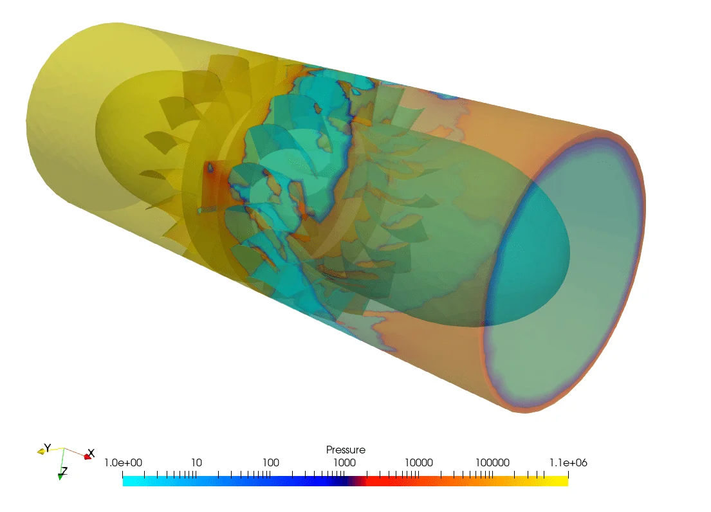
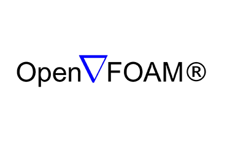
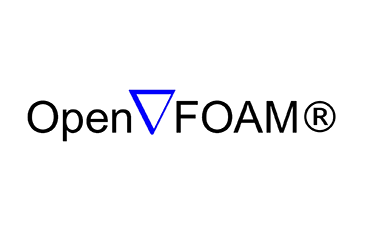

Our Portofolio
Kami telah menangani berbagai proyek pada institusi pendidikan dan perusahaan untuk kebutuhan penelitian, pengembangan, inovasi dan maintenance.
Proyek Kami
Analisis Sirkulasi Udara pada Kondensor Lippo Mall
Di samping merupakan hasil analisis numerik dari simulasi penghawaan ruang kondensor outdoor pada rooftop bangunan publik. Dari gambar di atas menunjukkan adanya proyeksi warna sesuai dengan spektrum di bawahnya. Dapat dilihat bahwa kecepatan udara tertinggi terdapat pada fan kondensor dan duct, serta sebagian udara yang keluar menuju ruang terbuka.
Dari gambar menunjukkan bahwa kecepatan udara dari sistem outdoor tersebut memiliki pola yang mirip dari masing-masing layer fan, dan kecepatan udara tidak terdistribusi merata, melainkan hanya terfokus pada bagian fan saja. Sehingga rawan terjadinya backflow pada aliran udara kondensor.
Klien: PT. Jaya Teknik Indonesia

Analisis Pembebanan pada Poros Pompa Sentrifugal
Dengan Finite Element Analysis (FEA), Engineer dapat mengetahui pola pembebanan pada poros (shaft) pompa sentrifugal, dari simulasi ini diketahui bagaimana beban blade berpengaruh pada nilai regangan dan defleksi poros.
Gambar di samping menunjukkan distribusi deformasi dengan indikasi warna merah sebagai deformasi terbesar dan warna biru posisi deformasi terkecil. Pada simulasi FEA di samping menggunakan material Steel S185
Klien: PT. Torishima Guna Engineering

Oscillating Water Coloum Power Generation
Kontur di samping merupakan gambar dari OWC (Oscillating Water Column) Power Generator yang berfungsi sebagai pengompresi (Compressor) udara. Pada gambar di samping menunjukkan spektrum distribusi tekanan dari turbine tersebut. Warna kehitaman menunjukkan adanya pressure drop atau penurunan tekanan secara signifikan akibat udara melalui Guide VAnde menuju ke blade turbine. Untuk case studi ini, mengamati seberapa besar pressure drop yang terjadi pada blade Guide Vande dan Blade Turbine, serta besarnya daya yang bisa didapatkan dari tekanan compressor sebesar 133 PSi.
Klien: PT. Medco Energy International, Tbk.

Thermal Storage Tank
Untuk mengetahui bagaimana debit aliran fluida mampu menjaga stabilitas suhu pada thermal water storage
tank, maka dapat
dilakukan simulasi CFD. Pada simulasi ini, user sedang melakukan beberapa simulasi dengan skema nilai debit
yang divariasikan,
guna mengetahui waktu kenaikan suhu yang mencapai suhu limit.
Dapat dilihat pada gambar bahwa intake suhu tinggi pada bagian berwarna merah dan air dengan suhu rendah
yang teremisi panas dari air masuk
mengalami perubahan warna dari hijau kebiruan dan ke merah. Dari simulasi ini bisa diketahui waktu kenaikan
suhu air dengan variasi debit yang digunakan.
Klien: PT. Bintang Timur Anugerah (PT. BTA)
Fluidized Bed
Simulasi pembakaran pada fluidized ben dengan model multifasa. Gambar di samping merupakan animasi dari hasil simulasi pada penampang melintang dengan menggunakan software OpenFOAM. Fenomena fluida di samping merupakan aliran multifasa untuk gas terkompresi, pada simulasi tersebut RANS, Reynolds Average Navier-Stoke, digunakan sebagai persamaan dalam mendapatkan data yang sesuai dengan kondisi real. Nampak pada gambar di samping adanya reaksi antara batu bara dengan gas bakar dan oksigen.
Proses reaksi ini meliputi fraksi 0.6 dan titik maksimum 0.063. Partikel silika menacair dengan campuran gas, reaksi ini terjadi pada sistem tungku pembangkit yang berfungsi untuk memanaskan air agar menjadi steam.
Klien: Universitas Gadjah Mada s

| Tahun | Nama Proyek | Institusi |
|---|---|---|
| 2022 | Design Analysis Geometry of Economizer | PT. IKPT |
| 2022 | Analisis pemodelan Thermal Storage Tank dalam Distribusi Air | PT. BTA |
| 2022 | Analisis Struktur Tangki Penyimpanan Minyak Mentah | PT. BTA |
| 2022 | Modelling Perfotmance Heat Transfer of Fitting Heat Exchanger | PT. WIKA |
| 2022 | Analisis Pemodelan Thermal Storage Tank dengan Variasi Debit Intake | PT. BTA |
| 2022 | Analysis of Turbomachinary Performance with Various Shroud | PT. Medco Energy |
| 2022 | Modelling Performance of Amdae Oil Pump | PT. Tracon Industry |
| 2022 | Analysis Centrifugal Blade for Redesign Model | PT. TGE |
| 2022 | CFD Modelling of Jatibarang Dam Break Model | PT. Supraharmonica C |
| 2022 | Analysis Performing of Blade Modified and Existing Centrifugal Pump | PT. Pupuk Indonesia |
| 2022 | Motion Modification Model FEA simulation | PT. Pertamina Hulu Rokan |
| 2022 | Simulasi Model Penghawaan Sub Tropis Hidroponik | Unsoed |
| 2022 | Simulasi Pemodelan Molten Salt Heat Removal | ITB |
| 2022 | Pemodelan Simulasi Microbubble Model dengan Water Injection | BRIN - LIPI |
| 2022 | Simulasi Courragated Heat Exchanger dengan Modifikasi Permukaan | MEPHI (Moscow) |
| 2022 | Modelling Analisis Penghawaan Ruang Hotel | PT. ATRIA HOTEL |
| 2022 | TAC Modelling HVAC | UNILA (Lampung) |
| 2022 | Modelling System Thermosiphone dan Wind Turbine | ITB |
| 2022 | Modelling Analisis Kekuatan Rangka Sepeda Listrik E-Max | PT. JUARA BIKE |
| 2022 | Modelling Analisis Gasifier Pyrolisis Model | UI |
| 2022 | Numerikal Model Static Kenics Mixer | PT. Rich Cream |
| 2022 | Simulasi Aliran Von Karman pada Cylinder | PT. Samator Gas |
| 2022 | Simulasi Pemodelan Portible LSHX Western Electric | PT. Western Electric Indonesia |
| 2022 | Modelling Analisis Proton Exchange Membrane Fuel Cell | PENS |
| 2022 | Simulasi Analisis Performa Pressure Vessel LNG | PT. PNG |
| 2022 | Modelling Analysis of Proton Exchange Membrance Fuel Cell with Various Temperature and Molarity Liquid | PENS |
| 2022 | Numerical Model Flow Over the Cylinder Von Karman Model | PT. Samator Gas, Indonesia |
| 2022 | Model Analisis Numerik pada Penghawaan Sistem Hidroponik | Unsoed, Indonesia |
| 2021 | Modelling Analysis ISO Speed Carborator | Angkatan Udara |
| 2021 | Analisis Pemodelan Momod Sucker Rod | PT. Pertamina Hulu Rokan |
| 2021 | Analisis Optimasi dan Re desain Lay Out Cooling Pipe | PT. Geopida Enargy |
| 2021 | Modelling Rumah Pompa Ancol Sentiong dan Analisis ketahanan Resiko Bangunan | PT. Wijaya Karya KSO |
| 2021 | Model Numerik Pemurni Air dengan Prinsip UV dan AOP | PT. Liepzig Textile |
| 2021 | Numerical Model Cavitation Analysis of Turbine Water Pump | Yonsei University, South Korea |
| 2021 | Analisis Pengaruh Kemiringan Sudut Pitch Terhadap Homogenisasi Produk Campuran Cream | PT. Rich, Indonesia |
| 2021 | Modelling Bubbling Model for Rice Husk Reactor Model Biomassa | University Indonesia |
| 2021 | Modelling Analysis of Advance Oxidation Process and Ultrasonic Model for Waste Water Treatment | ITB |
| 2021 | Numerical Model of Nanobubble Generation of Water Purifier | BRIN, Indonesia |
| 2021 | Mesh Manipulation with Inflation and Adaptation of Vertical Axis Water Turbin | ITS |
| 2021 | Modelling Viscous Model Over the Cylinder with K-epsilon Viscous Model | PT. Samantor Gas, Indonesia |
| 2021 | Design of Hydrokinetixs Water Turbine for Energy Generating | ITS |
| 2021 | Numerical Simulation of Constrained Melting of Phase Change Material in inclined Rectangular Enclosure | UB, Indonesia |
| 2021 | Modelling and Analysis of Pressure Drop Pipe Existing Pump Station | PT. Jaya Konstruksi, Indonesia |
| 2021 | Phase Change Model for Lauric Acid and Calcium Chloride Hexa-Hydrate | UB, Indonesia |
| 2021 | Numerical Model of Wankel Rotating Engine for Refrigerator of Reactor | University of Birmingham, UK |
| 2021 | Design and Modelling Shell Tube Corrugated Heat Exchanger | MEPhI, Rusia |
| 2021 | Flow Simulation for Spillway Jatibarang Dam and Dam Break Model | PT. Brantas Abipraya, Indonesia |
| 2021 | Numerical Investigation High Pressure Steam Ejector (Compressible Flow Case) | UGM |
| 2021 | Optimasi Flat Plate heat Exchanger dengan Model Computational Fluid Dynamics | PT. Pertamina, Indonesia |
| 2021 | Design and Analysis Water Treatment Plant - Waste Water Treatment Plant Bakauheni Harbour City, Lampung | PUPR |
| 2021 | Design of Portable Grain Dryer Multi-Capacity | Kementrian Desa dan Daerah Tertinggal, Indonesia |
| 2020 | Numerical Analysis of Refrigeration System using LSHX | Universitas Pancasila |
| 2020 | Numerical Analysis of Horizontal Axis Wind Turbine | National Taiwan University |
| 2020 | Design and Optimization of Nuclear Reactor for Using CFD Analysis | Politechnica Wroklawska, Poland |
| 2020 | CFD Simulation of HVAC in TATA Bus Cabin Type 713 | Tata Bus, India |
| 2020 | Shipping Vertical Multistage Centrifugal Pump Simulation Using Discrete Element Method | PKHT - UGM |
| 2020 | Modelling Boiler System Analysis for Multi Mesh Editing | UGM |
| 2020 | Design of Heating Plate and Pipe Twist for Thermo-Hydraulic Analysis | RKIT, India |
| 2020 | Frame and Aerodynamic Analysis of Mitsubishi FE 71 | Dinas Perhubungan Kota Tangerang, Indonesia |
| 2020 | Diameter Effect on Steam Quality of Multiphase Flow in PLTP Unit V Kamojang | UGM - PT. PLN |
| 2020 | Finite Element Analysis of Pressure Vessel Slug | Universitas Negri Malang, Indonesia |
| 2020 | Design and Optimization R407C & R404C refrigerant for Portable Chiller | PT. Western Electric, Indonesia |
| 2020 | Numerical Analysis of Refrigeration System using LSHX | Universitas Pancasila |
| 2020 | Numerical Analysis of Multi-thick Chasing Wall of Water Heater with Rockwool and Glasswool Material | ITS, Indonesia |
| 2020 | Design of Pebble Bed Modular Reactor and Numerical Analysis | University of Michigan, US |
| 2019 | Numerical Analysis of Wave Shape Blade VAWT | Universitas Siliwangi, Indonesia |
| 2019 | Design and Optimization Water Design Funnel for Hydro-Kinetics Power Plant | Ministry of Energy and Mineral |
| 2019 | Effect of Mach and Reynolds Number on Heat Transfer of Diffusing Compressor Cascade Airfoil Heat Exchanger | UGM, Indonesia |
| 2019 | Numerical Analysis of Intercooler and Recuperator System of Compressor Gas Turbine | Tokyo Tech, Japan |
| 2019 | Optimization Design of Funnel Effect of Hydrokinetics Power Plant | ESDM, Indonesia |
| 2019 | High Speed Compressible Flow Analysis of Heat Air Foil Exchanger | U-Tokyo, Japan |
| 2016 | Blade Design of Horizontal Axis Wind Turbine with AoA and Enlargement Area of Blade | UGM, Indonesia |
| 2015 | Hybrid Renewable Power Plant of Solar Cell and VAWT | UGM |
In Association With
 

Standardized by